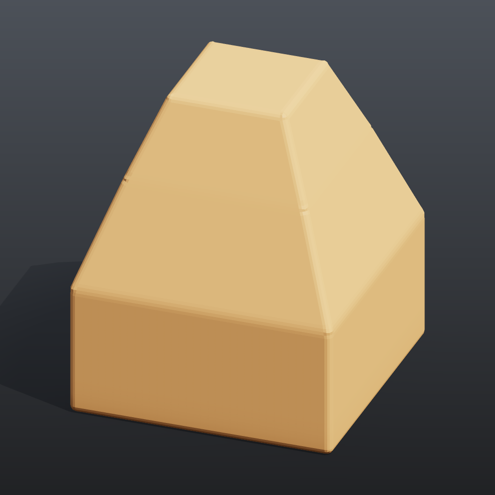

Tutorial 1: first geometry#
Builds a small tapered tower from a single box: transform it, select its top face with a group, extrude that face twice, bevel all edges, colour it, and look at the result as a rendered image and in the 3D viewport. It is the smallest complete "make something, see it" loop in comfyui_pcg.

Load it#
Drag example_workflows/tutorial_01_first_geometry.json onto the ComfyUI canvas and press Queue. No model files or other custom nodes are needed.
Step by step#
- Box (PCG) creates a 2 x 1 x 2 box centred at the origin (6 quads).
- Transform (PCG) ("Turn 15 degrees") rotates it 15 degrees around Y.
- Group Create (PCG) ("Group 'top'") puts every primitive whose normal is within 10 degrees of +Y into the primitive group
top(Keep by Normals, direction 0 1 0, spread 10). On a box that is exactly one face. - PolyExtrude (PCG) ("Extrude the top face", group
top) insets that face by 0.3 and pushes it up 0.8. The new top face is written to the output groupextrudeFrontand the new walls toextrudeSide. - A second PolyExtrude (PCG) ("Extrude it again", group
extrudeFront) repeats the move with inset 0.25 and distance 0.6, which gives the second storey. The top of the tower ends at y = 0.5 + 0.8 + 0.6 = 1.9. - PolyBevel (PCG) ("Round all edges") bevels every edge by 0.05 with 2 divisions.
- Color (PCG) ("Paint") writes a constant colour
Cd. - Geometry Preview (PCG) renders the geometry to a ComfyUI IMAGE (1024 x 1024, Studio look: shadows, AO, a shadow-catching ground), which ComfyUI's Preview Image displays. Viewport (PCG) shows the same mesh in an interactive 3D view on the node.
Worth tweaking#
| Node | Parameter | Effect |
|---|---|---|
| PolyExtrude (both) | distance, inset | Storey height and how much each storey steps in. A negative distance pushes the face into the box. |
| PolyExtrude | divisions | Extra edge loops on the new walls. |
| Group Create | spread | Raise it to also catch faces that are not exactly horizontal. |
| PolyBevel | distance, divisions, shape | Bevel size and roundness (round, chamfer, ...). |
| Geometry Preview (PCG) | look, elevation, azimuth | Basic is the plain preview (then shading applies: normal and lambert ignore the colour and show the shape); the angles move the camera and the key light with it. |
See also#
- Geometry concepts: points, primitives and groups such as
extrudeFront. - Groups: the syntax accepted by every Group field.
- Viewing and export: Preview Image (PCG), the 3D viewport and exporting meshes.
- Next: Tutorial 2: scatter and copy.